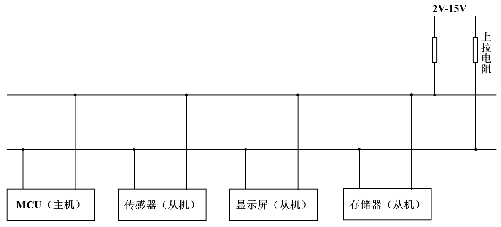

Software I2C & Multi-Sensor Interface
• GPIO 模拟开漏时序：克服硬件 I2C 容易死锁卡死的弊端，自主实现精准的 Start、Stop、SendByte 和 ReadByte 微秒级延时时序。
• 一总线双节点采集：在 PB6 (SCL) 和 PB7 (SDA) 组成的模拟总线上同时并联 AHT20 温湿度传感器与 BMP280 气压温度传感器，动态交替采样。
